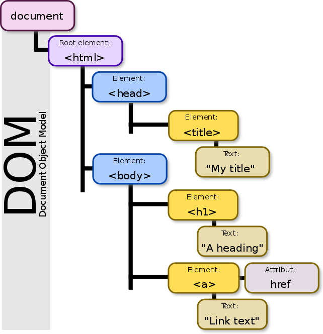

DOM Manipulations
Created for
Created by
DOM bases
Overview
- DOMDocumentObjectModel
- A platform-independent and language agnostic convention for representing and manipulating the objects in HTML, XHTML и XML documents.
- Web Browsers represent internally the HTML/CSS code in a structure, very close to DOM, called BOMBrowserObjectModel.
DOM/BOM/JS objects(API)

The DOM tree
<!DOCTYPE html>
<html>
<head>
<title>My title</title>
</head>
<body>
<h1>A heading</h1>
<a href="#">Link text</a>
</body>
</html>
The DOM tree
{kind=link}
- DOM is an hierarchical structure.
- DOM defines next object types, called nodes
- document node.
- elements nodes
- attribute nodes
- text node
- comment node
The Document Object
- The html element is represented by the document object.
- w3schools: The HTML DOM Document Object
Example:
<body>
Paragraph 1!
</body>
The Element Object
- Every HTML element is represented by an object of type element object
- Each element node could be a parent node for: element nodes, text nodes or comment nodes
- The HTML DOM Element Object
Example:
<body>
Paragraph 1!
</body>
The Attribute Object
- Every HTMl attribute is represented as object of type: attribute object
- an attribute object is always a part of an element object.
- The HTML DOM Attribute Object
- We rarely use in practice an attribute object to manipulate an element attributes. Each element object has properties and methods to read/write attributes, like
getAttribute()/setAttribute()/removeAttribute()
Example:
<body>
Paragraph 1!
</body>
The Text Object
- The text content of an HTML element or HTML attribute is represented as object of type text object
- XML DOM - The Text Object
- In practice, to manipulate the text content of an element, we use the element methods:
innerHTMLorinnerText
Example:
<body>
Paragraph 1!
</body>
The Comment Object
- HTML comments are represented as objects of type Comment Object
- XML DOM - The Comment Object
Example:
<body>
Paragraph 1!
</body>
Numerical Node Types
- Each DOM object type has an associated number. Thus, it could be dynamically determined what's the type of an object.
- Browsers use the
nodeTypeobject property to represent the object numerical type - XML DOM Node Types
Methods for accessing Element Nodes
getElementById()
- returns the object, representing the HTML element with the given
var node = document.getElementById('test');
getElementsByClassName()
- Returns NodeList - a collection of all objects, representing the HTML elements with the given class
- NodeList is a structure similar, but not exactly, to JavaScript arrays
- To get a given HTML element from the collection we have to use the [] notation.
var allRedNodes = document.getElementsByClassName('red');
var firstRedNode = allRedNodes[0];
getElementsByTagName()
- Returns NodeList - a collection of all objects, representing the HTML elements with the given tag Name
var allParagraphNodes = document.getElementsByTagName('p');
var firstParagraph = allParagraphNodes[0];
querySelector()
- Return an object representing the first HTML element, which could be selected by the given selector.
var firstLI = document.querySelector("ul>li:nth-of-type(1)");
querySelectorAll()
- Return NodeList of all objects, representing the HTML elements, which could be selected by the given selector.
var allFooterLI = document.querySelectorAll('footer ul>li');
These slides are based on
customised version of
framework